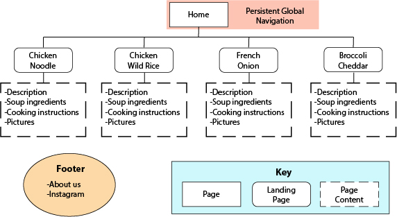
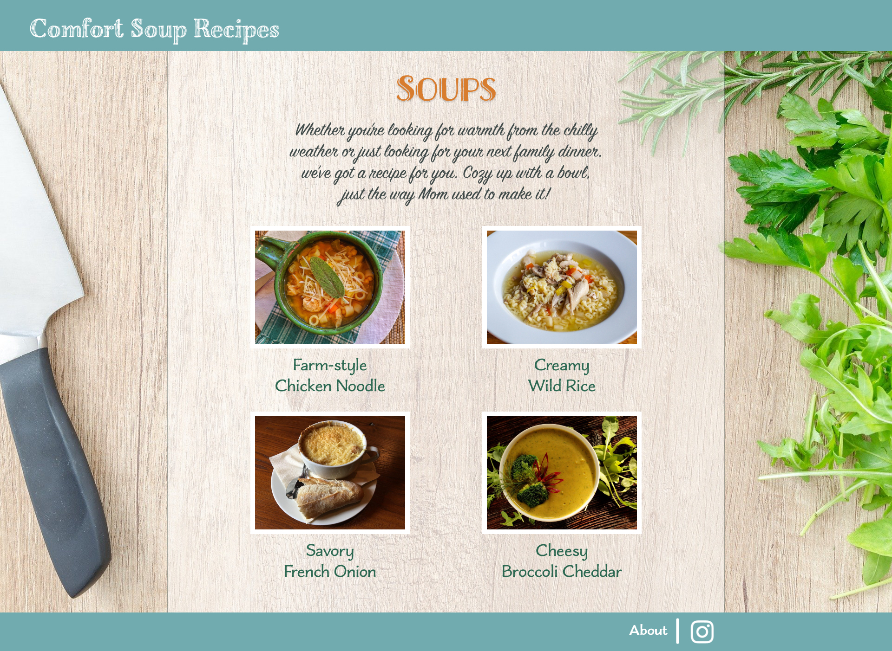

Assignment 2
Zac McCloud
Sitemap
Personas
User One
Karen is a regular, middle-aged, suburban mom and she is looking for a meal to plan for dinner. She has a family to feed and wants to make soemthing that will feed everyone and last for a few meals. She is looking for a classic homestyle recipe using fresh ingredients.
User Two
Mike is a young adult who lives with his girlfrind and he likes to plan and cook their meals on the weekend to eat throughout the week. It has been rainy and he is looking for a hearty soup recipe to make for the week.
Desktop
Homepage
Recipe Page